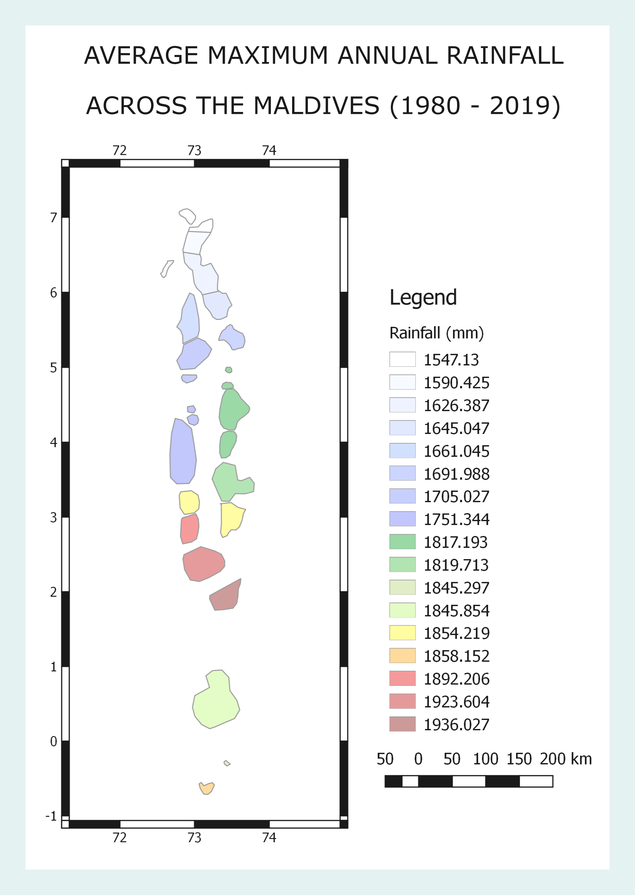
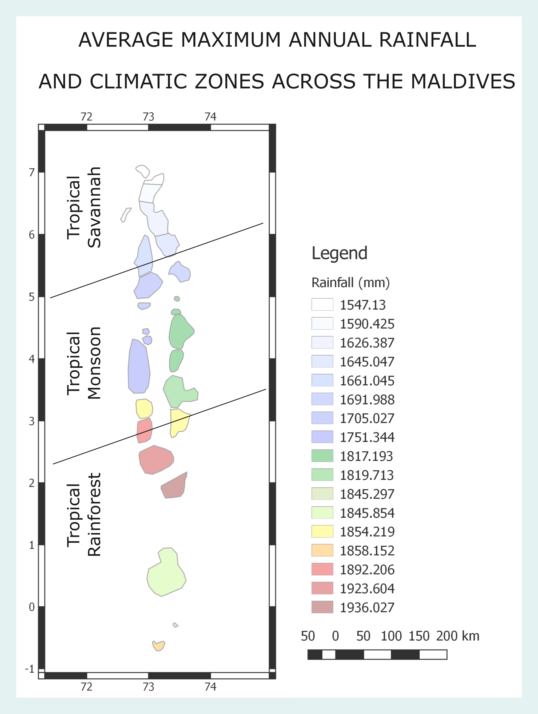

Island Health Explorer
Atoll Climate Explorer
Currently the following climatic variables are offered to be explored :
- Atoll Daily Temperature Explorer
Minimum and Maximum temperature time series for each administrative atoll (1980 - Present) - Atoll Surface Pressure / MSLP Explorer
(Minimum and Maximum temperatures for each administrative atoll, 1980 - Present) - Atoll Precipitation Explorer
(Rainfall averages for each administrative atoll, 1980 - Present) - Atoll Wind Explorer
(Wind speed and direction for the region, 1980 - Present) - Atoll Monthly Surface Sea Water Temperature Explorer
(Atoll Monthly Surface Sea Water Temperature explorer using three different datasets (HYCOM, MODIS, Noaa CDR)) - Atoll Interannual Surface Sea Water Temperature Explorer
(Atoll Monthly Surface Sea Water Temperature explorer using three different datasets (HYCOM, MODIS, Noaa CDR), allows exploration in monthly variations annually.) - Atoll Future Maximum Near Surface Air Temperature Explorer
(Atoll Monthly Surface Sea Water Temperature explorer for future projections using 2 different Representative Concentration Pathways (RCP) scenarios. The RCP 8.5 scenario corresponds to a business as usual situation. The RCP 4.5 scenario corresponds to an intermediate situation where emissions peak around 2040 and then decline.)
Example application - Climatic Zones according to precipitation
Introduction
Rain fall across the Atolls is well understood to be influenced by the Monsoonal patterns of the South Asian Subcontinent (Zahid, 2011). Further, gauge data from MMS shows that the rainfall increases towards the South. Given that difference in rainfall patterns particularly in the tropics can give rise to the existence of different subdivisions of climactic regions, his raises a plausible question to further explore rainfall patterns across the Atolls to see if we can infer additional patterns. So lets see how we can achieve this!
Accessing the Data
To analyse rainfall data, we need access to high quality long term rainfall gauge data. However, the atolls have a few observational posts, spread across a large area. And even this data is not accessible on the public domain. It is here that we can harness the accessibility of GEE. We use the Atoll Precipitation Explorer app and it takes only a few clicks to export long term rainfall data. The app utilizes the ERA5 dataset, and we use daily aggregates of rainfall from 1980 - 2019. We export data for each atoll using the "Atoll rainfall explorer" app, which exports the data in csv format, which can be processed using your favorite data analysis tool directly. So let's see what we can do with the data.
Which months produce the most rainfall ?
As our exported csv files already contains the mean rainfall over three decades for each month across the atolls, lets plot the variance of rainfall across some of the atolls. To make things interesting we will add the monthly minimum threshold of rainfall to qualify as a "Tropical Rain Forest Climate" zone.

The plot is really intretsing as it shows that the rainfall across the Central-Southern and Southern atolls clerly indicates that these atolls experience a much shorter "dry" season and these atolls experience a "Tropical Rain Forest Climate", unlike the Nothern Atolls.
Which atoll recives the most rainfall ?
A plausible question that can be asked now is to explore the variance of total rainfall across the country. As we already have exported the csv files of the mean total rainfall across all months for each atoll it is trivial to plot the total rainfall across the country for each atoll.
The rainfall rates of each atoll plotted shows that the three atolls of the South-Central zone experience the highest rainfall, with Hadhunmathi (Laamu Atoll), experiencing the most, inline with studies such as (Zahid, 2011). Lets go one step further and classify the atolls according to the climatic zones.
Climate zones across the country
Further analysis of the rainfall paterns over the past three decades indicates three climatic zones within the country as seen below.
